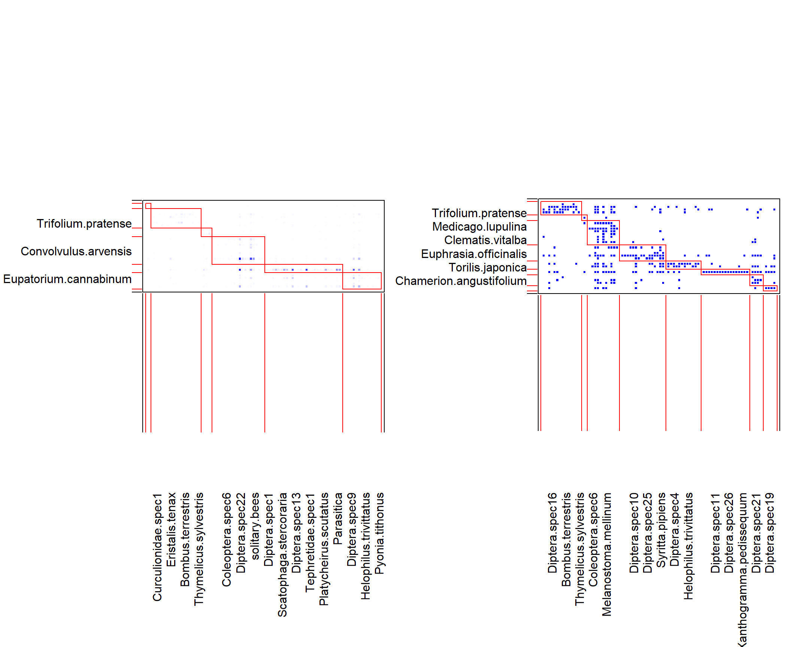

Networks_HW3
KiseokUchicago
2021-04-19
Last updated: 2021-04-24
Checks: 7 0
Knit directory: Networks_HW_S2021/
This reproducible R Markdown analysis was created with workflowr (version 1.6.2). The Checks tab describes the reproducibility checks that were applied when the results were created. The Past versions tab lists the development history.
Great! Since the R Markdown file has been committed to the Git repository, you know the exact version of the code that produced these results.
Great job! The global environment was empty. Objects defined in the global environment can affect the analysis in your R Markdown file in unknown ways. For reproduciblity it’s best to always run the code in an empty environment.
The command set.seed(20210409) was run prior to running the code in the R Markdown file. Setting a seed ensures that any results that rely on randomness, e.g. subsampling or permutations, are reproducible.
Great job! Recording the operating system, R version, and package versions is critical for reproducibility.
Nice! There were no cached chunks for this analysis, so you can be confident that you successfully produced the results during this run.
Great job! Using relative paths to the files within your workflowr project makes it easier to run your code on other machines.
Great! You are using Git for version control. Tracking code development and connecting the code version to the results is critical for reproducibility.
The results in this page were generated with repository version 2d07fa0. See the Past versions tab to see a history of the changes made to the R Markdown and HTML files.
Note that you need to be careful to ensure that all relevant files for the analysis have been committed to Git prior to generating the results (you can use wflow_publish or wflow_git_commit). workflowr only checks the R Markdown file, but you know if there are other scripts or data files that it depends on. Below is the status of the Git repository when the results were generated:
Ignored files:
Ignored: .Rhistory
Ignored: .Rproj.user/
Untracked files:
Untracked: data/1_0.3_edge_mer.css.ss.5.tsv
Untracked: data/1_0.3_node_mer.css.ss.5.tsv
Untracked: data/2_0.3_edge_dom.css.ss.5.tsv
Untracked: data/2_0.3_node_dom.css.ss.5.tsv
Untracked: data/3_0.3_edge_wil.css.ss.5.tsv
Untracked: data/3_0.3_node_wil.css.ss.5.tsv
Untracked: data/4_0.3_edge_phy.css.ss.5.tsv
Untracked: data/5_0.3_edge_dom.phy.ss.5.tsv
Untracked: data/6_0.3_edge_wil.phy.ss.5.tsv
Untracked: data/7_0.3_edge_fun.css.ss.5.tsv
Untracked: data/8_0.3_edge_dom.fun.ss.5.tsv
Untracked: data/9_0.3_edge_wil.fun.ss.5.tsv
Untracked: data/Chesapeake_bay_links.csv
Untracked: data/Chesapeake_bay_nodes.csv
Untracked: data/Dunne2013PBioSupData.xlsx
Untracked: data/M_PA_003.csv
Untracked: data/Otago_Data_Links.csv
Untracked: data/Otago_Data_Nodes.csv
Untracked: data/Ural_valley_A_HP_048.csv
Untracked: data/vizentin-bugoni_et_al_2016_complementary.xlsx
Note that any generated files, e.g. HTML, png, CSS, etc., are not included in this status report because it is ok for generated content to have uncommitted changes.
These are the previous versions of the repository in which changes were made to the R Markdown (analysis/Networks_HW3.Rmd) and HTML (docs/Networks_HW3.html) files. If you’ve configured a remote Git repository (see ?wflow_git_remote), click on the hyperlinks in the table below to view the files as they were in that past version.
| File | Version | Author | Date | Message |
|---|---|---|---|---|
| Rmd | 2d07fa0 | KiseokUchicago | 2021-04-24 | HW3 |
| html | 912dd8d | KiseokUchicago | 2021-04-24 | Build site. |
| Rmd | c02f513 | KiseokUchicago | 2021-04-24 | HW3 |
| html | 2a4b554 | KiseokUchicago | 2021-04-24 | Build site. |
| Rmd | 436e3fe | KiseokUchicago | 2021-04-24 | HW3 |
| html | fd62530 | KiseokUchicago | 2021-04-19 | Build site. |
| Rmd | 6468cf1 | KiseokUchicago | 2021-04-19 | begin |
Homework3 (Community detection, modularity)
Coding assignment for ECEV 44500 Networks in Ecology and Evolution
Professor: Mercedes Pascual, Sergio A. Alcala Corona
Student: Kiseok Lee
# libraries
library(igraph)
library(bipartite)
library(dplyr)
library(ggplot2)
library(RColorBrewer)1. Community detection (a.k.a “modularity”)
1.1 Unipartite networks
community structure detection algorithms are different.
1.1.1. Undirected, unweighted
Let’s try to detect communities in the Chesapeake Food Web from the last lab. This is a quantitative food web but for simplicity at this first stage we will work with an undirected, unweighted graph.
# Load the web
chesapeake_nodes <- read.csv('data/Chesapeake_bay_nodes.csv', header=F)
names(chesapeake_nodes) <- c('nodeId','species_name')
chesapeake_links <- read.csv('data/Chesapeake_bay_links.csv', header=F)
names(chesapeake_links) <- c('from','to','weight')
ches_web <- graph.data.frame(chesapeake_links, vertices = chesapeake_nodes, directed = T)
# Detect communities, note the as.undirected command
ches_web_unweighted <- ches_web
ches_web_unweighted <- as.undirected(ches_web_unweighted)
E(ches_web_unweighted)$weight <- 1
# implementing Louvain method
cl <- cluster_louvain(ches_web_unweighted) # Can also use the weights = NULL argument
class(cl) # the result is of class communities[1] "communities"# module membership & visualization
module_membership <- membership(cl)
cols <- data.frame(mem=unique(module_membership), col= brewer.pal(length(unique(module_membership)), 'Set1'))
V(ches_web_unweighted)$module_membership <- module_membership
V(ches_web_unweighted)$color <- cols$col[match(V(ches_web_unweighted)$module_membership, cols$mem)]
plot(ches_web_unweighted, vertex.color=V(ches_web_unweighted)$color, vertex.size=10, vertex.label=NA, edge.arrow.width=0.3, edge.arrow.curve=0.5)Problem 1. Can you identify the species in each module? Does the assignment make sense?
plot(ches_web_unweighted, vertex.color=V(ches_web_unweighted)$color, vertex.size=10, edge.arrow.width=0.3, edge.arrow.curve=0.5)v_red <- names(module_membership[module_membership==1])
v_blue <- names(module_membership[module_membership==2])
v_green <- names(module_membership[module_membership==3])
# red nodes
chesapeake_nodes %>% filter(nodeId %in% v_red) nodeId species_name
1 1 phytoplankton
2 2 bacteria in suspended poc
3 5 free bacteria
4 6 heterotrophic microflagel
5 7 ciliates
6 8 zooplankton
7 9 ctenophores
8 10 sea nettle
9 11 other suspension feeders
10 12 mya arenaria
11 13 oysters
12 34 dissolved organic carbon
13 35 suspended particulate org
14 37 Input # blue nodes
chesapeake_nodes %>% filter(nodeId %in% v_blue) nodeId species_name
1 3 bacteria in sediment poc
2 4 benthic diatoms
3 14 other polychaetes
4 15 nereis
5 16 macoma spp.
6 17 meiofauna
7 18 crustacean deposit feeder
8 19 blue crab
9 24 shad
10 25 croaker
11 26 hogchoker
12 27 spot
13 28 white perch
14 29 catfish
15 36 sediment particulate orga
16 39 Respiration # green nodes
chesapeake_nodes %>% filter(nodeId %in% v_green) nodeId species_name
1 20 fish larvae
2 21 alewife & blue herring
3 22 bay anchovy
4 23 menhaden
5 30 bluefish
6 31 weakfish
7 32 summer flounder
8 33 striped bass
9 38 Output Red nodes and Green nodes makes sense. Red node comprises of microorganism or aquatic animals that dwell in the waters. Green node seems to be bigger animals (top predators like fish). Blue node makes less sense with my prior knowledge. But module would consist of a food web that could include both predator and prey that are closely associated. Therefore, Green node could be artificial.
Problem 2 & 3. Try a different community detection method, like cluster_edge_betweenness. Are there any differences in module assignments?
# implementing cluster_edge_betweenness method
cl_eb <- cluster_edge_betweenness(ches_web_unweighted) # Can also use the weights = NULL argument
class(cl_eb) # the result is of class communities[1] "communities"# module membership & visualization
module_member <- membership(cl_eb)
cols <- data.frame(mem=unique(module_member), col= brewer.pal(length(unique(module_member)), 'Set1'))
V(ches_web_unweighted)$module_member <- module_member
V(ches_web_unweighted)$color2 <- cols$col[match(V(ches_web_unweighted)$module_member, cols$mem)]
plot(ches_web_unweighted, vertex.color=V(ches_web_unweighted)$color2, vertex.size=10, vertex.label=NA, edge.arrow.width=0.3, edge.arrow.curve=0.5)Yes, they are very different from the previouse Louvain’s method. There are up to 7 modules compared to 3 modules before. Also, module 1 is dominant in number of nodes includes and other modules are relatively small, some modules even containing only 1 nodes.
1.1.2. Undirected, weighted
cl_wt <- cluster_louvain(as.undirected(ches_web), weights = E(ches_web)$weight) #Notice the `weights` argument.
class(cl_wt) # the result is of class communities[1] "communities"module_membership_wt <- membership(cl_wt)
cols <- data.frame(mem=unique(module_membership_wt), col= brewer.pal(length(unique(module_membership_wt)), 'Set1'))
V(ches_web)$module_membership_wt <- module_membership_wt
V(ches_web)$color_wt <- cols$col[match(V(ches_web)$module_membership_wt, cols$mem)]
plot(as.undirected(ches_web), vertex.color=V(ches_web)$color_wt, vertex.size=5, vertex.label=NA, edge.arrow.width=0.3, edge.arrow.curve=0.5)Problem 4. Are the module assignments the same as in the unweighted network?
par(mfrow=c(1,2))
plot(ches_web_unweighted, vertex.color=V(ches_web_unweighted)$color, vertex.size=10, vertex.label=NA, edge.arrow.width=0.3, edge.arrow.curve=0.5, main="Unweighted")
plot(as.undirected(ches_web), vertex.color=V(ches_web)$color_wt, vertex.size=5, vertex.label=NA, edge.arrow.width=0.3, edge.arrow.curve=0.5, main="Weighted")No, they are not the same. The number of modules is also different.
Directed networks We will not touch upon directed networks in the context of modularity maximization, although there is a development for it by Guimera et al (2007). The description of the sofware and the associated papers is here. The problem is that it is not available in an easy package, so you will have to hack your way through this. In fact, for directed networks we recommend using Infomap.
3. Bipartite networks
The difference between bipartite and unipartite networks lies in the “null” term of the modularity function, which should account for the fact that edges cannot be expected between nodes of the same set. This is well explained in (Guimera et al. 2007; Barber 2007) and reviewed in the context of ecology by Thebault (2013). Each of these have their own software associated with their papers.
But for the sake of this exercise we are looking for an implementation to optimize modularity maximization which will be readily available, and also will allow us to analyze batches of networks (for testing patterns against shuffled networks). The bipartite package has a recent implementation of Stephen Beckett’s DIRTLPAwb+ algorithm (Beckett 2016). This algorithm maximizes a modularity function for weighted bipartite networks (Dorman & Strauss 2014), which is a recent extention of Barber’s (2007) method and is reduced to it if the input is a binary network. All this can be a bit confusing so it is strongly suggested to read these papers if you are about to apply these methods for community detection in your research.
mod <- computeModules(memmott1999)
slotNames(mod) # see ?moduleWeb for details[1] "originalWeb" "moduleWeb" "orderA" "orderB" "modules"
[6] "likelihood" mod@likelihood # This is the value of the modularity function Q. NOTICE THE @ SIGN (instead of $).[1] 0.3039558# 0.3042993
module_list <- listModuleInformation(mod) # The output is rather cumbersome...
par(mfrow=c(1,1))
plotModuleWeb(mod)module_list <- module_list[[2]] # let's look at the modules. The first element in the list is the whole network, so start with 2
for (i in 1:2){ # Show the two first modules.
message(paste('Module:',i))
print(module_list[[i]])
}[[1]]
[1] "Euphrasia.officinalis"
[[2]]
[1] "Platycheirus.albimanus"
[[1]]
[1] "Lotus.corniculatus" "Centaurea.nigra" "Knautia.arvensis"
[4] "Lathyrus.pratensis" "Trifolium.pratense" "Angelica.sylvestris"
[[2]]
[1] "Coleoptera.spec1" "Curculionidae.spec1" "Conipidae.spec1"
[4] "Diptera.spec14" "Diptera.spec16" "Diptera.spec25"
[7] "Eristalis.tenax" "Rhingia.campestris" "Bombus.lapidarius"
[10] "Bombus.muscorum" "Bombus.pascuorum" "Bombus.terrestris"
[13] "Psithyrus.spec1" "Apis.mellifera" "Polyommatus.icarus"
[16] "Maniola.jurtina" "Thymelicus.sylvestris"This list data structure is horrible for analysis. This code transforms it to a data frame:
# Transform the lists to data frames
m <- length(module_list) # Number of modules
mod_plants <- unlist(module_list, recursive = F)[seq(1,2*m,2)] # Assignments of plants
names(mod_plants) <- 1:m
mod_pollinators <- unlist(module_list, recursive = F)[seq(2,2*m,2)] # Assignments of pollinators
names(mod_pollinators) <- 1:m
tmp_plants <- data.frame(module = rep(names(mod_plants), sapply(mod_plants, length)), species = unlist(mod_plants), type='Plants')
tmp_poillnators <- data.frame(module = rep(names(mod_pollinators), sapply(mod_pollinators, length)), species = unlist(mod_pollinators), type='Pollinators')
# Make one data frame
(module_assignments <- rbind(tmp_plants,tmp_poillnators)) module species type
1 1 Euphrasia.officinalis Plants
21 2 Lotus.corniculatus Plants
22 2 Centaurea.nigra Plants
23 2 Knautia.arvensis Plants
24 2 Lathyrus.pratensis Plants
25 2 Trifolium.pratense Plants
26 2 Angelica.sylvestris Plants
31 3 Agrimonium.eupatorium Plants
32 3 Plantago.major Plants
41 4 Leontodon.autumnalis Plants
42 4 Medicago.lupulina Plants
43 4 Hypochaeris.radicata Plants
44 4 Linum.catharticum Plants
45 4 Convolvulus.arvensis Plants
46 4 Leontodon.saxatilis Plants
47 4 Senecio.jacobaea Plants
48 4 Leontodon.hispidus Plants
49 4 Crepis.capillaris Plants
51 5 Rubus.fruticosus Plants
52 5 Daucus.carota Plants
61 6 Aethusa.cynapium Plants
62 6 Eupatorium.cannabinum Plants
63 6 Clematis.vitalba Plants
64 6 Chamerion.angustifolium Plants
65 6 Torilis.japonica Plants
11 1 Platycheirus.albimanus Pollinators
218 2 Coleoptera.spec1 Pollinators
221 2 Curculionidae.spec1 Pollinators
231 2 Conipidae.spec1 Pollinators
241 2 Diptera.spec14 Pollinators
251 2 Diptera.spec16 Pollinators
261 2 Diptera.spec25 Pollinators
27 2 Eristalis.tenax Pollinators
28 2 Rhingia.campestris Pollinators
29 2 Bombus.lapidarius Pollinators
210 2 Bombus.muscorum Pollinators
211 2 Bombus.pascuorum Pollinators
212 2 Bombus.terrestris Pollinators
213 2 Psithyrus.spec1 Pollinators
214 2 Apis.mellifera Pollinators
215 2 Polyommatus.icarus Pollinators
216 2 Maniola.jurtina Pollinators
217 2 Thymelicus.sylvestris Pollinators
311 3 Melanostoma.mellinum Pollinators
321 3 Melanostoma.scalare Pollinators
33 3 Platycheirus.clypeatus Pollinators
419 4 Coleoptera.spec2 Pollinators
421 4 Coleoptera.spec3 Pollinators
431 4 Coleoptera.spec4 Pollinators
441 4 Coleoptera.spec5 Pollinators
451 4 Coleoptera.spec6 Pollinators
461 4 Coleoptera.spec7 Pollinators
471 4 Diptera.spec10 Pollinators
481 4 Diptera.spec17 Pollinators
491 4 Diptera.spec18 Pollinators
410 4 Diptera.spec22 Pollinators
411 4 Diptera.spec23 Pollinators
412 4 Episyrphus.arbustorum Pollinators
413 4 Helophilus.pendulus Pollinators
414 4 Sphaerophoria.scripta Pollinators
415 4 solitary.bees Pollinators
416 4 Pieris.brassicae Pollinators
417 4 Incurvariidae.spec1 Pollinators
418 4 Aglais.urticae Pollinators
5110 5 Diptera.spec1 Pollinators
528 5 Diptera.spec3 Pollinators
53 5 Diptera.spec4 Pollinators
54 5 Diptera.spec5 Pollinators
55 5 Diptera.spec6 Pollinators
56 5 Scatophaga.stercoraria Pollinators
57 5 Diptera.spec7 Pollinators
58 5 Diptera.spec8 Pollinators
59 5 Diptera.spec11 Pollinators
510 5 Diptera.spec12 Pollinators
511 5 Diptera.spec13 Pollinators
512 5 Diptera.spec15 Pollinators
513 5 Diptera.spec19 Pollinators
514 5 Diptera.spec20 Pollinators
515 5 Diptera.spec21 Pollinators
516 5 Tephretidae.spec1 Pollinators
517 5 Diptera.spec26 Pollinators
518 5 Diptera.spec27 Pollinators
519 5 Chrysotoxum.bicinctum Pollinators
520 5 Metasyrphus.corollae Pollinators
521 5 Platycheirus.scutatus Pollinators
522 5 Syritta.pipiens Pollinators
523 5 Syrphus.ribesii Pollinators
524 5 Syrphus.vitripennis Pollinators
525 5 Xanthogramma.pedissequum Pollinators
526 5 Parasitica Pollinators
527 5 Symphyta.spec1 Pollinators
614 6 Cantharidae.spec1 Pollinators
621 6 Diptera.spec2 Pollinators
631 6 Diptera.spec9 Pollinators
641 6 Eriothrix.rufomaculata Pollinators
651 6 Diptera.spec24 Pollinators
66 6 Episyrphus.balteatus Pollinators
67 6 Eristalis.pertinax Pollinators
68 6 Helophilus.trivittatus Pollinators
69 6 Meliscaeva.auricollis Pollinators
610 6 Scaeva.pyrastri Pollinators
611 6 Formicidae.spec1 Pollinators
612 6 Symphyta.spec2 Pollinators
613 6 Pyonia.tithonus PollinatorsProblem 5. Try to calculate modularity for the binary version of this web. How do the results differ?
class(memmott1999)[1] "matrix" "array" dim(memmott1999)[1] 25 79# conver to binary matrix
sum(memmott1999!=0)[1] 299mem_binary <- ifelse(memmott1999>0, 1, 0)
sum(mem_binary!=0) # conversion worked well[1] 299mod_b <- computeModules(mem_binary)
slotNames(mod_b) # see ?moduleWeb for details[1] "originalWeb" "moduleWeb" "orderA" "orderB" "modules"
[6] "likelihood" mod_b@likelihood # This is the value of the modularity function Q. NOTICE THE @ SIGN (instead of $).[1] 0.3240903# 0.3284303
module_list <- listModuleInformation(mod_b) # The output is rather cumbersome...
par(mfrow=c(1,1))
plotModuleWeb(mod_b)module_list <- module_list[[2]] # let's look at the modules. The first element in the list is the whole network, so start with 2
for (i in 1:2){ # Show the two first modules.
message(paste('Module:',i))
print(module_list[[i]])
}[[1]]
[1] "Lotus.corniculatus" "Centaurea.nigra" "Knautia.arvensis"
[4] "Trifolium.pratense"
[[2]]
[1] "Coleoptera.spec1" "Curculionidae.spec1" "Diptera.spec7"
[4] "Diptera.spec16" "Eristalis.tenax" "Bombus.lapidarius"
[7] "Bombus.muscorum" "Bombus.pascuorum" "Bombus.terrestris"
[10] "Psithyrus.spec1" "Apis.mellifera" "Polyommatus.icarus"
[13] "Pyonia.tithonus" "Thymelicus.sylvestris"
[[1]]
[1] "Plantago.major"
[[2]]
[1] "Platycheirus.clypeatus"# This list data structure is horrible for analysis. This code transforms it to a data frame:
# Transform the lists to data frames
m <- length(module_list) # Number of modules
mod_plants <- unlist(module_list, recursive = F)[seq(1,2*m,2)] # Assignments of plants
names(mod_plants) <- 1:m
mod_pollinators <- unlist(module_list, recursive = F)[seq(2,2*m,2)] # Assignments of pollinators
names(mod_pollinators) <- 1:m
tmp_plants <- data.frame(module = rep(names(mod_plants), sapply(mod_plants, length)), species = unlist(mod_plants), type='Plants')
tmp_poillnators <- data.frame(module = rep(names(mod_pollinators), sapply(mod_pollinators, length)), species = unlist(mod_pollinators), type='Pollinators')
# Make one data frame
(module_assignments2 <- rbind(tmp_plants,tmp_poillnators)) module species type
11 1 Lotus.corniculatus Plants
12 1 Centaurea.nigra Plants
13 1 Knautia.arvensis Plants
14 1 Trifolium.pratense Plants
2 2 Plantago.major Plants
31 3 Agrimonium.eupatorium Plants
32 3 Medicago.lupulina Plants
33 3 Hypochaeris.radicata Plants
34 3 Linum.catharticum Plants
35 3 Convolvulus.arvensis Plants
36 3 Leontodon.saxatilis Plants
37 3 Clematis.vitalba Plants
38 3 Senecio.jacobaea Plants
41 4 Leontodon.autumnalis Plants
42 4 Rubus.fruticosus Plants
43 4 Euphrasia.officinalis Plants
44 4 Leontodon.hispidus Plants
45 4 Angelica.sylvestris Plants
51 5 Eupatorium.cannabinum Plants
52 5 Torilis.japonica Plants
6 6 Daucus.carota Plants
71 7 Lathyrus.pratensis Plants
72 7 Chamerion.angustifolium Plants
73 7 Crepis.capillaris Plants
8 8 Aethusa.cynapium Plants
115 1 Coleoptera.spec1 Pollinators
121 1 Curculionidae.spec1 Pollinators
131 1 Diptera.spec7 Pollinators
141 1 Diptera.spec16 Pollinators
15 1 Eristalis.tenax Pollinators
16 1 Bombus.lapidarius Pollinators
17 1 Bombus.muscorum Pollinators
18 1 Bombus.pascuorum Pollinators
19 1 Bombus.terrestris Pollinators
110 1 Psithyrus.spec1 Pollinators
111 1 Apis.mellifera Pollinators
112 1 Polyommatus.icarus Pollinators
113 1 Pyonia.tithonus Pollinators
114 1 Thymelicus.sylvestris Pollinators
21 2 Platycheirus.clypeatus Pollinators
312 3 Coleoptera.spec3 Pollinators
321 3 Coleoptera.spec6 Pollinators
331 3 Eriothrix.rufomaculata Pollinators
341 3 Diptera.spec22 Pollinators
351 3 Diptera.spec23 Pollinators
361 3 Episyrphus.balteatus Pollinators
371 3 Melanostoma.mellinum Pollinators
381 3 Metasyrphus.corollae Pollinators
39 3 Sphaerophoria.scripta Pollinators
310 3 solitary.bees Pollinators
311 3 Pieris.brassicae Pollinators
417 4 Coleoptera.spec2 Pollinators
421 4 Coleoptera.spec4 Pollinators
431 4 Coleoptera.spec5 Pollinators
441 4 Coleoptera.spec7 Pollinators
451 4 Diptera.spec10 Pollinators
46 4 Diptera.spec12 Pollinators
47 4 Diptera.spec14 Pollinators
48 4 Diptera.spec17 Pollinators
49 4 Diptera.spec18 Pollinators
410 4 Diptera.spec25 Pollinators
411 4 Diptera.spec27 Pollinators
412 4 Episyrphus.arbustorum Pollinators
413 4 Helophilus.pendulus Pollinators
414 4 Platycheirus.albimanus Pollinators
415 4 Syritta.pipiens Pollinators
416 4 Parasitica Pollinators
513 5 Cantharidae.spec1 Pollinators
521 5 Diptera.spec2 Pollinators
53 5 Diptera.spec4 Pollinators
54 5 Conipidae.spec1 Pollinators
55 5 Diptera.spec8 Pollinators
56 5 Diptera.spec24 Pollinators
57 5 Eristalis.pertinax Pollinators
58 5 Helophilus.trivittatus Pollinators
59 5 Scaeva.pyrastri Pollinators
510 5 Formicidae.spec1 Pollinators
511 5 Symphyta.spec2 Pollinators
512 5 Aglais.urticae Pollinators
61 6 Diptera.spec1 Pollinators
62 6 Diptera.spec3 Pollinators
63 6 Scatophaga.stercoraria Pollinators
64 6 Diptera.spec9 Pollinators
65 6 Diptera.spec11 Pollinators
66 6 Diptera.spec13 Pollinators
67 6 Diptera.spec15 Pollinators
68 6 Diptera.spec20 Pollinators
69 6 Tephretidae.spec1 Pollinators
610 6 Diptera.spec26 Pollinators
611 6 Chrysotoxum.bicinctum Pollinators
612 6 Platycheirus.scutatus Pollinators
613 6 Syrphus.ribesii Pollinators
614 6 Syrphus.vitripennis Pollinators
615 6 Xanthogramma.pedissequum Pollinators
616 6 Incurvariidae.spec1 Pollinators
617 6 Maniola.jurtina Pollinators
711 7 Diptera.spec5 Pollinators
721 7 Diptera.spec21 Pollinators
731 7 Melanostoma.scalare Pollinators
74 7 Rhingia.campestris Pollinators
81 8 Diptera.spec6 Pollinators
82 8 Diptera.spec19 Pollinators
83 8 Meliscaeva.auricollis Pollinators
84 8 Symphyta.spec1 Pollinatorspar(mfrow=c(1,2))
plotModuleWeb(mod)
plotModuleWeb(mod_b)
par(mfrow=c(1,1))
# module_assignments
# module_assignments2
module_assignments %>% filter(type=="Plants") module species type
1 1 Euphrasia.officinalis Plants
21 2 Lotus.corniculatus Plants
22 2 Centaurea.nigra Plants
23 2 Knautia.arvensis Plants
24 2 Lathyrus.pratensis Plants
25 2 Trifolium.pratense Plants
26 2 Angelica.sylvestris Plants
31 3 Agrimonium.eupatorium Plants
32 3 Plantago.major Plants
41 4 Leontodon.autumnalis Plants
42 4 Medicago.lupulina Plants
43 4 Hypochaeris.radicata Plants
44 4 Linum.catharticum Plants
45 4 Convolvulus.arvensis Plants
46 4 Leontodon.saxatilis Plants
47 4 Senecio.jacobaea Plants
48 4 Leontodon.hispidus Plants
49 4 Crepis.capillaris Plants
51 5 Rubus.fruticosus Plants
52 5 Daucus.carota Plants
61 6 Aethusa.cynapium Plants
62 6 Eupatorium.cannabinum Plants
63 6 Clematis.vitalba Plants
64 6 Chamerion.angustifolium Plants
65 6 Torilis.japonica Plantsmodule_assignments2 %>% filter(type=="Plants") module species type
11 1 Lotus.corniculatus Plants
12 1 Centaurea.nigra Plants
13 1 Knautia.arvensis Plants
14 1 Trifolium.pratense Plants
2 2 Plantago.major Plants
31 3 Agrimonium.eupatorium Plants
32 3 Medicago.lupulina Plants
33 3 Hypochaeris.radicata Plants
34 3 Linum.catharticum Plants
35 3 Convolvulus.arvensis Plants
36 3 Leontodon.saxatilis Plants
37 3 Clematis.vitalba Plants
38 3 Senecio.jacobaea Plants
41 4 Leontodon.autumnalis Plants
42 4 Rubus.fruticosus Plants
43 4 Euphrasia.officinalis Plants
44 4 Leontodon.hispidus Plants
45 4 Angelica.sylvestris Plants
51 5 Eupatorium.cannabinum Plants
52 5 Torilis.japonica Plants
6 6 Daucus.carota Plants
71 7 Lathyrus.pratensis Plants
72 7 Chamerion.angustifolium Plants
73 7 Crepis.capillaris Plants
8 8 Aethusa.cynapium Plants- The modularity Q increased about 10% with binary matrix: from 0.3042993 to 0.3284303
- The assignment of the nodes to the module is also slightly different. For example, for plants the number of modules increased by 1 (5 -> 6) in binary matrix. In addition, the biggest module’s size increased to 11 from 9.
Problem 6. Can you project the network and calculate modularity in each of the projections? Do plants that cluster together in the projection also cluster together in the bipartite version? Is there an difference in the ecological interpretation between these two scenarios?
# lower = g x g matrix for g plants / higher = n x n matrix for n pollinators
plants_projected <- as.one.mode(memmott1999, project = 'lower')
dim(plants_projected)[1] 25 25# plants_projected
# project to pollinators
# pollinator_projected <- as.one.mode(memmott1999, project = 'higher')
# dim(pollinator_projected)
rownames(plants_projected) [1] "Agrimonium.eupatorium" "Leontodon.autumnalis"
[3] "Lotus.corniculatus" "Medicago.lupulina"
[5] "Rubus.fruticosus" "Hypochaeris.radicata"
[7] "Centaurea.nigra" "Euphrasia.officinalis"
[9] "Linum.catharticum" "Convolvulus.arvensis"
[11] "Knautia.arvensis" "Aethusa.cynapium"
[13] "Eupatorium.cannabinum" "Plantago.major"
[15] "Leontodon.saxatilis" "Lathyrus.pratensis"
[17] "Clematis.vitalba" "Senecio.jacobaea"
[19] "Trifolium.pratense" "Chamerion.angustifolium"
[21] "Leontodon.hispidus" "Crepis.capillaris"
[23] "Torilis.japonica" "Angelica.sylvestris"
[25] "Daucus.carota" colnames(plants_projected) [1] "Agrimonium.eupatorium" "Leontodon.autumnalis"
[3] "Lotus.corniculatus" "Medicago.lupulina"
[5] "Rubus.fruticosus" "Hypochaeris.radicata"
[7] "Centaurea.nigra" "Euphrasia.officinalis"
[9] "Linum.catharticum" "Convolvulus.arvensis"
[11] "Knautia.arvensis" "Aethusa.cynapium"
[13] "Eupatorium.cannabinum" "Plantago.major"
[15] "Leontodon.saxatilis" "Lathyrus.pratensis"
[17] "Clematis.vitalba" "Senecio.jacobaea"
[19] "Trifolium.pratense" "Chamerion.angustifolium"
[21] "Leontodon.hispidus" "Crepis.capillaris"
[23] "Torilis.japonica" "Angelica.sylvestris"
[25] "Daucus.carota" isSymmetric.matrix(plants_projected) # symmetric, therefore undirected[1] TRUEg_plant <- igraph::graph.adjacency(plants_projected, mode = 'undirected')
par(mar=c(0,0,0,0))
plot(g_plant, vertex.size=6, edge.curved=0.5)# Detect communities, note the as.undirected command
E(g_plant)$weight <- 1
# implementing Louvain method
cl <- cluster_louvain(g_plant) # Can also use the weights = NULL argument
class(cl) # the result is of class communities[1] "communities"# module membership & visualization
module_membership <- membership(cl)
cols <- data.frame(mem=unique(module_membership),col=c('blue','red'))
V(g_plant)$module_membership <- module_membership
V(g_plant)$color <- cols$col[match(V(g_plant)$module_membership, cols$mem)]
plot(g_plant, vertex.color=V(g_plant)$color, vertex.size=10, edge.arrow.width=0.3, edge.arrow.curve=0.5)# compare membership
# (1) module membership for bipartite version
mod_bipartite <- module_assignments %>% filter(type=="Plants")
table(mod_bipartite$module)
1 2 3 4 5 6
1 6 2 9 2 5 # (2) module membership for unipartite version
table(module_membership)module_membership
1 2
21 4 # look for discrepencies
# (1) Module that Leontodon.autumnalis is in for bipartite case
Leon_mod <- mod_bipartite %>% filter(species=='Leontodon.autumnalis')
mem_bi <- mod_bipartite %>% filter(module==Leon_mod$module) %>% select(species) %>% unlist()
# (2) Module that Leontodon.autumnalis is in for unipartite modules
mod_unipartite <- data.frame(species=names(module_membership),module=as.numeric(module_membership))
Leon_mod_uni <- mod_unipartite %>% filter(species=='Leontodon.autumnalis') # Leontodon.autumnalis is in module 3
mem_uni <- mod_unipartite %>% filter(module==Leon_mod_uni$module) %>% select(species) %>% unlist()
# see difference
setdiff(mem_bi,mem_uni)[1] "Leontodon.hispidus"setdiff(mem_uni,mem_bi) [1] "Agrimonium.eupatorium" "Lotus.corniculatus"
[3] "Rubus.fruticosus" "Centaurea.nigra"
[5] "Euphrasia.officinalis" "Knautia.arvensis"
[7] "Aethusa.cynapium" "Plantago.major"
[9] "Lathyrus.pratensis" "Clematis.vitalba"
[11] "Trifolium.pratense" "Chamerion.angustifolium"
[13] "Angelica.sylvestris" - The number of modules is different between bipartite and unipartite modules
- For example for the module that Leontodon.autumnalis is in, bipartite module is smaller than that of unipartite version. They are not the exact subset of one another. So we can say that not all plants that cluster together in the projection also cluster together in the bipartite version.
- There is a difference in the ecological interpretation between these two scenarios. We lose information when we project the adjacency matrix into unipartite networks. Therefore, when creating modules, we no longer take the pollinator information into account (directly), which is ecologically different than having the pollinator information to directly maximize modularity Q. This is why the unipartite network’s modular structure becomes much simpler(less number of modules) than that of bipartite version.
Problem 7. Find another data set that interests you personally in which you could hypothesize the existence of communities. Explain why this hypothesis is relevant for this data set. Analyze for communities, with a method from the material above. Do the results support the hypothesis (e.g., when you examine the nodes in each module).
I would be interested in the modularity of fungal-bacterial network of rice seed. Hypothesis is that fungi and bacteria would not exist as separate module in the network. microbiome.(https://microbiomejournal.biomedcentral.com/articles/10.1186/s40168-020-00805-0)
# domesticated rice seed microbiome
domestic_links <- read.csv('data/2_0.3_node_dom.css.ss.5.tsv',sep="\t", header=T)
b_domestic_links <- read.csv('data/5_0.3_edge_dom.phy.ss.5.tsv',sep="\t", header=T)
f_domestic_links <- read.csv('data/8_0.3_edge_dom.fun.ss.5.tsv',sep="\t", header=T)
# wild rice seed microbiome
wild_links <- read.csv('data/3_0.3_edge_wil.css.ss.5.tsv',sep="\t", header=T)
b_wild_links <- read.csv('data/6_0.3_edge_wil.phy.ss.5.tsv',sep="\t", header=T) # bacteria
f_wild_links <- read.csv('data/9_0.3_edge_wil.fun.ss.5.tsv',sep="\t", header=T) # fungi
# microbial network of wild rice seed endophytes
wild_web <- graph.data.frame(wild_links, directed = F)
b_wild_web <- graph.data.frame(b_wild_links, directed = F) # bacteria
f_wild_web <- graph.data.frame(f_wild_links, directed = F) # fungi
plot(wild_web, vertex.size=5, vertex.label=NA, main="Bacteria & Fungi-Wild rice")plot(b_wild_web, vertex.size=5, vertex.label=NA, main="Bacteria-Wild rice")plot(f_wild_web, vertex.size=5, vertex.label=NA, main="Fungi-Wild rice")
# Detect communities, note the as.undirected command
wild_unweighted <- wild_web
wild_unweighted <- as.undirected(wild_unweighted)
E(wild_unweighted)$weight <- 1
# implementing Louvain method
cl <- cluster_louvain(wild_unweighted) # Can also use the weights = NULL argument
class(cl) # the result is of class communities[1] "communities"# module membership & visualization
module_membership <- membership(cl)
table(module_membership)module_membership
1 2 3 4 5 6 7 8 9 10 11 12 13 14 15 16 17 18 19 20 21
22 5 8 22 10 14 29 44 2 3 4 18 15 3 21 19 23 31 33 15 20 my_color_collection <- c(
"#CBD588", "#5F7FC7", "orange", "#AD6F3B", "#673770",
"#D14285", "#652926", "#C84248", "#8569D5", "#5E738F",
"#D1A33D", "#8A7C64", "#599861","#616163", "#FFCDB2",
"#6D9F71", "#242F40",
"#CCA43B", "#F92A82", "#ED7B84", "#7EB77F",
"#DEC4A1", "#E5D1D0", '#0E8482', '#C9DAEA', '#337357',
'#95C623', '#E55812', '#04471C', '#F2D7EE', '#D3BCC0',
'#A5668B', '#69306D', '#0E103D', '#1A535C', '#4ECDC4',
'#F7FFF7', '#FF6B6B', '#FFE66D', '#6699CC', '#FFF275',
'#FF8C42', '#FF3C38', '#A23E48', '#000000', '#CF5C36',
'#EEE5E9', '#7C7C7C', '#EFC88B', '#2E5266', '#6E8898',
'#9FB1BC', '#D3D0CB', '#E2C044', '#5BC0EB', '#FDE74C',
'#9BC53D', '#E55934', '#FA7921', "#CD9BCD", "#508578", "#DA5724")
# color
cols <- data.frame(mem=unique(module_membership), col= my_color_collection[1:length(unique(module_membership))])
V(wild_unweighted)$module_membership <- module_membership
V(wild_unweighted)$color <- cols$col[match(V(wild_unweighted)$module_membership, cols$mem)]
# shape: triangle fungi / circle bacteria
V(wild_unweighted)$shape <- ifelse(substr(V(wild_unweighted)$name,1,1)=="B","circle","csquare")
# plot network
plot(wild_unweighted, vertex.color=V(wild_unweighted)$color, vertex.size=6, edge.arrow.width=0.3, edge.arrow.curve=0.5, vertex.shape=V(wild_unweighted)$shape, vertex.label=NA)Circle is bacteria and square is fungi. We can see that square and circle coexist in each module.
4. References
Barber M. Modularity and community detection in bipartite networks. Physical Review E. 2007;76: 1–9.
Beckett SJ. Improved community detection in weighted bipartite networks. R Soc Open Sci. 2016;3: 140536.
Dormann CF, Strauss R. A method for detecting modules in quantitative bipartite networks. Methods Ecol Evol. 2014;5: 90–98.
Guimerà R, Sales-Pardo M, Amaral LAN. Module identification in bipartite and directed networks. Phys Rev E Stat Nonlin Soft Matter Phys. 2007;76: 036102.
Thébault E. Identifying compartments in presence-absence matrices and bipartite networks: insights into modularity measures. J Biogeogr. 2013;40: 759–768.)
To go deeper into the topic of Community Detection in networks, here are some useful references:
Fortunato, Santo, and Darko Hric. “Community detection in networks: A user guide.” Physics reports 659 (2016): 1-44.
Fortunato, Santo. “Community detection in graphs.” Physics reports 486, no. 3-5 (2010): 75-174.
sessionInfo()R version 4.0.3 (2020-10-10)
Platform: x86_64-w64-mingw32/x64 (64-bit)
Running under: Windows 10 x64 (build 19042)
Matrix products: default
locale:
[1] LC_COLLATE=English_United States.1252
[2] LC_CTYPE=English_United States.1252
[3] LC_MONETARY=English_United States.1252
[4] LC_NUMERIC=C
[5] LC_TIME=English_United States.1252
attached base packages:
[1] stats graphics grDevices utils datasets methods base
other attached packages:
[1] RColorBrewer_1.1-2 ggplot2_3.3.3 dplyr_1.0.4
[4] bipartite_2.16 sna_2.6 network_1.16.1
[7] statnet.common_4.4.1 vegan_2.5-7 lattice_0.20-41
[10] permute_0.9-5 igraph_1.2.6 workflowr_1.6.2
loaded via a namespace (and not attached):
[1] Rcpp_1.0.5 assertthat_0.2.1 rprojroot_2.0.2 digest_0.6.27
[5] utf8_1.1.4 rle_0.9.2 R6_2.5.0 evaluate_0.14
[9] coda_0.19-4 spam_2.6-0 highr_0.8 pillar_1.5.1
[13] rlang_0.4.10 whisker_0.4 jquerylib_0.1.3 Matrix_1.2-18
[17] rmarkdown_2.7 splines_4.0.3 stringr_1.4.0 munsell_0.5.0
[21] compiler_4.0.3 httpuv_1.5.4 xfun_0.20 pkgconfig_2.0.3
[25] mgcv_1.8-33 htmltools_0.5.1.1 tidyselect_1.1.0 tibble_3.0.4
[29] fansi_0.4.2 withr_2.4.1 crayon_1.4.1 later_1.1.0.1
[33] MASS_7.3-53 grid_4.0.3 nlme_3.1-149 jsonlite_1.7.2
[37] gtable_0.3.0 lifecycle_1.0.0 DBI_1.1.1 git2r_0.28.0
[41] magrittr_2.0.1 scales_1.1.1 stringi_1.5.3 fs_1.5.0
[45] promises_1.1.1 bslib_0.2.4 ellipsis_0.3.1 vctrs_0.3.6
[49] generics_0.1.0 tools_4.0.3 glue_1.4.2 purrr_0.3.4
[53] maps_3.3.0 fields_11.6 parallel_4.0.3 yaml_2.2.1
[57] colorspace_2.0-0 cluster_2.1.0 dotCall64_1.0-1 knitr_1.31
[61] sass_0.3.1